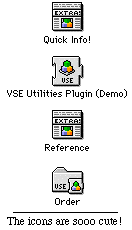

VSE Plugins 1.0.1
Author: VSE Software
Price: $24.95 ($25 if you buy it over the internet)
Download: Demo
Version |
VSE Plugins have gotten a lot of publicity recently (At least in my
opinion). As the first plugin that isn't free, it's a great deal: 50 new commands
for $25. It provides methods to get and set many different pieces of information,
such as the system volume, the system version, the mouse coordinates (local or global).
It also includes other commands that perform actions, such as the Speak command,
which uses Text to Speach to say a string in the default voice. And, possibly best
of all, it only takes up only 10K of space in your compiled programs.
 The
first thing I did when I got my copy of this product was to open up the reference.
The reference has a list of all the commands at the left, and a document on the right
that contains all the commands. It has examples and descriptions for all of them–a
major plus.
As I read through the reference, I couldn't help but think of how
incredibly useful some of these routines would be for my programs. The ability to
get the current volume and set it without resorting to AppleScript. Being able to
use the mouse in SpriteSurfaces. I was genuinely excited.
For $25, this package will add new depth to your application. If it
uses sound, you can add a volume control. If it uses sprites, you can add mouse support.
If it uses toolbar buttons, you can add balloon help that pops up after the mouse
hasn't moved for a certain period of time.
However, I soon recovered from my initial jubilation and realized
something rather odd. Nearly all of the commands (about 40) retrieve or set system
information, and are very similiar to eachother (i.e., the FIVE commands that are
used to get the state of the mouse).
Other commands are simply pointless, such as the "Reverse"
command, which flips strings around (e.g. HELLO becomes OLLEH). I can't think of
a single case where you'd want to use this, and even then, there's no reason you
can't just write out a method on your own in RB.
What's the point of pointing this out? Simply put, the VSE plugin
has a bunch of junk in it. There are certainly uses for all the routines, but in
most cases, there's another way to do the exact same thing for absolutely free. For
example, the speech commands, and volume commands can all be done through AppleScript.
That's not the only problem though. Judging by what most of the functions
do, I figured that most of them couldn't be more than 2 or 3 lines long in C (this
is why the plugin uses so little space). I checked with someone who programs in C,
and they confirmed this. This means that most of the commands that the VSE Utility
plugin includes would be extremely easy for Andrew to integrate into RB, and I see
no reason that this won't happen. Most of them should be built-in, such as the Speak
command, and mouse commands.
Right now, this product is wonderful. Nearly all of the commands add
new and useful abilities to RB. However, if you buy this product now, there might
only be 3 or 4 of its 50 commands that don't have equivalents that are built-in to
Realbasic. And even if aren't added, a certain third party plugin maker has given
me reason to believe that he will make a similiar plugin for free in the near future...
Pros: Gives 50 new commands in one small plugin. Adds wonderful new
abilities to RB. Easy registration process. Excellent documentation.
Cons: No example project. Many commands can be done through AppleScript
or an XCMD. Most of the commands will probably be part of RB in the very near future.
|